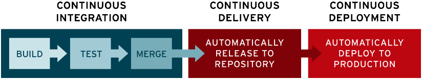

ci-cd_section_01_ch_02_cicd
개념
CI/CD (Continuous Integration/Continuous Delivery )은 애플리케이션 개발 단계를 자동화하여 애플리케이션을 더욱 짧은 주기로 고객에게 제공하는 방법입니다.
기본 개념은 지속적인 통합, 지속적인 서비스 제공, 지속적인 배포입니다.
특히 CI/CD는 애플리케이션의 통합 및 테스트 단계에서부터 제공 및 배포에 이르는 애플리케이션의 라이프 사이클 전체에 걸쳐서 지속적인 자동화와 지속적인 모니터링을 제공합니다.
이런 구축 사례를 CI/CD 파이프라인이라고 부릅니다.
파이프라인

파이프라인은 코드를 빌드, 테스트, 배포하는 과정을 거쳐 소프트웨어 개발을 추진하는 프로세스를 말합니다.
파이프라인에 포함되는 툴에는 코드 컴파일,유닛 테스트,코드 분석,보안, 바이너리 생성등이 있습니다.
지속적 통합(Continuous Integration, CI)
현대 어플리케이션은 동일한 어플리케이션에 각기 다른 기능을 작업할 수 있도록 하는 것을 목표로합니다.
그러나 특정한 날을 정해 모든 분기 소스 코드를 병합하는 경우, 결과적으로 반복적인 수작업에 많은 시간을 소모하게 됩니다. 반복적인 수작업을 하는 이유는 독립적으로 작업하는 개발자가 애플리케이션에 변경 사항을 적용할 때 다른 개발자가 동시에 적용하는 변경 사항과 충돌할 가능성이 있기 때문입니다.
CI(지속적 통합) 을 통해 개발자들은 코드 변경 사항을 공유 브랜치 또는 "트렁크"로 다시 병합하는 작업을 더욱 수월하게 자주 수행할 수 있습니다.
개발자가 애플리케이션에 적용한 변경 사항이 병합되면 각기 다른 레벨의 자동화된 테스트(단위 테스트 및 통합 테스트) 실행을 통해 변경 사항이 애플리케이션에 제대로 적용되는지 확인합니다.
클래스와 기능에서부터 전체 애플리케이션을 구성하는 서로 다른 모듈에 이르기까지 모든 것에 대한 테스트를 수행합니다. 자동화된 테스트에서 기존 코드와 신규 코드간의 충돌이 발생된다면 CI를 통해 빠르게 수정할 수 있습니다.
- 요약
현대 어플리케이션은 다양한 기능을 동일한 어플리케이션 내에서 개발하고 병합하는데, CI를 활용하여 변경사항 충돌을 미리 감지하고 자동화된 테스트를 통해 적용 여부를 확인하여 개발 시간을 단축시킵니다.
지속적 제공(Continuous Delivery, CD)
CI의 빌드 자동화, 유닛 및 통합 테스트 수행 후, 이어지는 지속적 제공 프로세스에서는 유효한 코드를 리포지토리에 자동으로 릴리스합니다. 그러므로 효과적인 지속적 제공 프로세스를 실현하기 위해서는 개발 파이프라인에 CI가 먼저 구축되어 있어야 합니다. 지속적 제공의 목표는 프로덕션 환경으로 배포할 준비가 되어 있는 코드베이스를 확보하는 것입니다. 지속적 제공의 경우, 코드 변경 사항 병합부터 프로덕션에 적합한 빌드 제공에 이르는 모든 단계에는 테스트 자동화와 코드 릴리스 자동화가 포함됩니다. 이 프로세스를 완료하면 운영팀이 더욱 빠르고 손쉽게 애플리케이션을 프로덕션으로 배포할 수 있게 됩니다.
지속적 배포(Continuous Deployment, CD)
지속적 배포는 CI/CD 파이프라인의 마지막으로, 자동화된 테스트를 통과한 프로덕션 준비 빌드를 자동으로 릴리스하여 애플리케이션을 프로덕션 환경에 자동으로 배포하는 과정이다. 이를 통해 개발자는 변경 사항을 작성한 후 몇 분 내에 클라우드 애플리케이션을 실행할 수 있으며, 작은 조각으로 애플리케이션 변경 사항을 세분화하여 위험을 줄이고 사용자 피드백을 지속적으로 수신하고 통합할 수 있다.